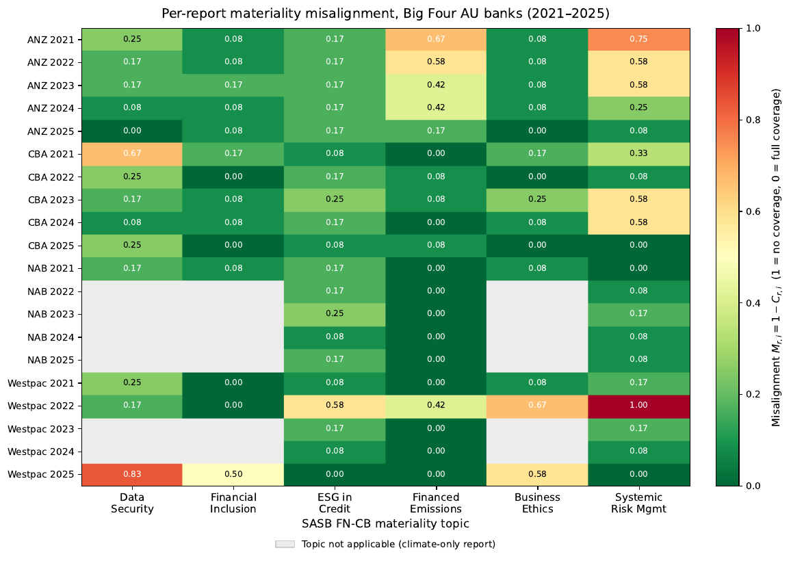
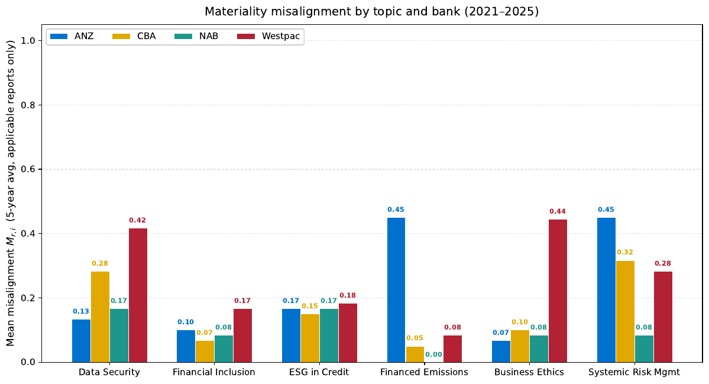
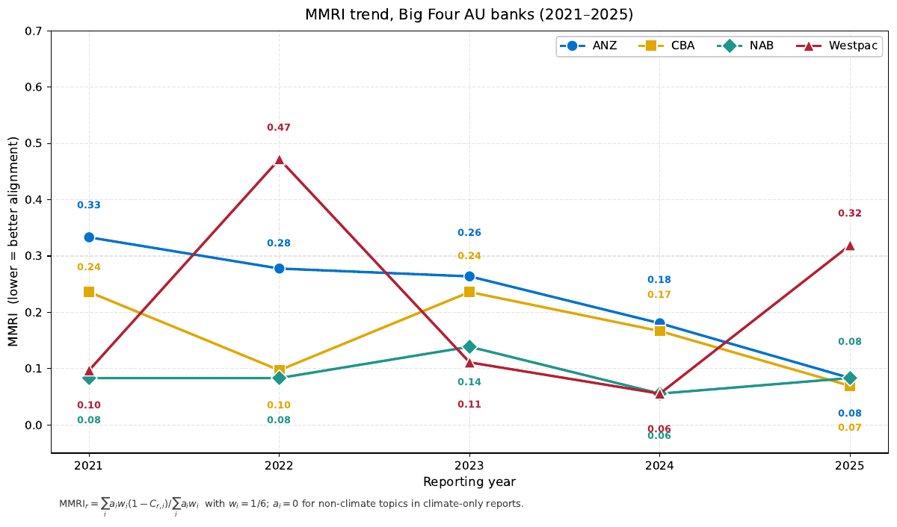
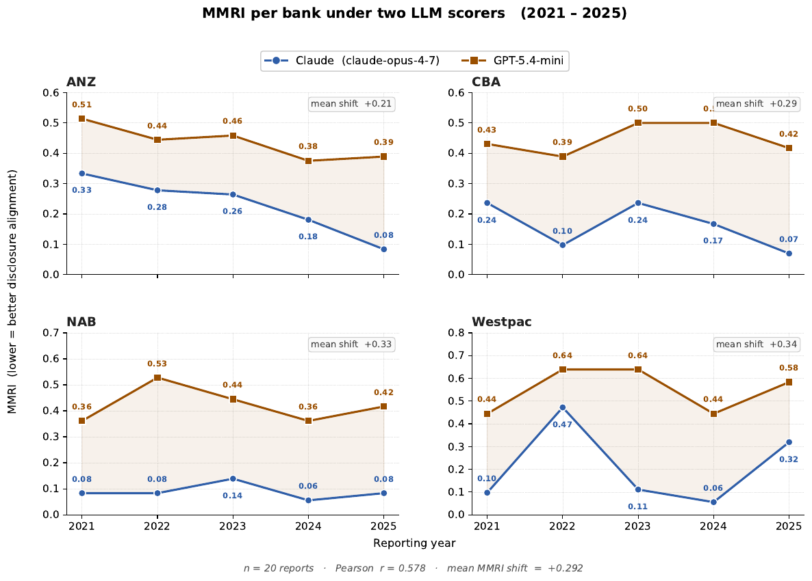
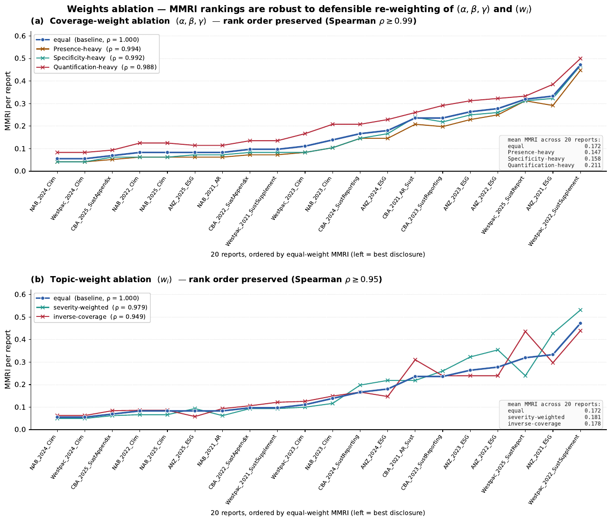
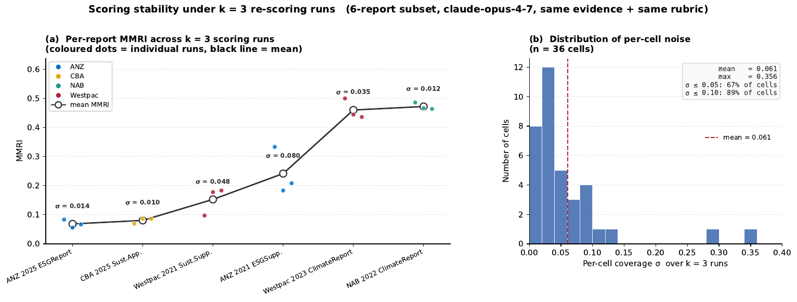

<title>Materiality Misalignment Risk Index</title>
<link rel="preconnect" href="https://fonts.googleapis.com">
<link rel="preconnect" href="https://fonts.gstatic.com" crossorigin>
<link rel="stylesheet" href="https://fonts.googleapis.com/css2?family=Spectral:ital,wght@0,400;0,600;1,400&family=Source+Sans+3:wght@400;600&display=swap">

<style>
  :root {
    --ink:        #16191f;
    --ink-soft:   #4a5260;
    --ink-faint:  #737d8c;
    --ground:     #fbfbfa;
    --raised:     #ffffff;
    --rule:       #dfe2e6;
    --rule-soft:  #ecedf0;
    --accent:     #96541a;
    --accent-lo:  #f2e6d8;
    --good:       #2f6b4f;

    --serif: "Spectral", Georgia, "Times New Roman", serif;
    --sans:  "Source Sans 3", -apple-system, BlinkMacSystemFont, "Segoe UI", sans-serif;
    --mono:  ui-monospace, SFMono-Regular, Menlo, Consolas, monospace;

    --measure: 68ch;
    --wide: 1080px;
  }

  @media (prefers-color-scheme: dark) {
    :root:not([data-theme="light"]) {
      --ink:        #e8eaed;
      --ink-soft:   #a8b0bc;
      --ink-faint:  #79828f;
      --ground:     #14161a;
      --raised:     #1b1e23;
      --rule:       #2e333a;
      --rule-soft:  #23272d;
      --accent:     #e0a561;
      --accent-lo:  #33281c;
      --good:       #6fb894;
    }
  }
  :root[data-theme="dark"] {
    --ink:        #e8eaed;
    --ink-soft:   #a8b0bc;
    --ink-faint:  #79828f;
    --ground:     #14161a;
    --raised:     #1b1e23;
    --rule:       #2e333a;
    --rule-soft:  #23272d;
    --accent:     #e0a561;
    --accent-lo:  #33281c;
    --good:       #6fb894;
  }

  * { box-sizing: border-box; }

  body {
    margin: 0;
    background: var(--ground);
    color: var(--ink);
    font-family: var(--sans);
    font-size: 17px;
    line-height: 1.65;
    -webkit-font-smoothing: antialiased;
  }

  .wrap { max-width: var(--wide); margin: 0 auto; padding: 0 28px; }
  .col  { max-width: var(--measure); }

  a { color: var(--accent); text-decoration-thickness: 1px; text-underline-offset: 2px; }
  a:focus-visible, button:focus-visible {
    outline: 2px solid var(--accent); outline-offset: 3px; border-radius: 2px;
  }

  /* ---------- masthead ---------- */
  header.masthead { border-bottom: 1px solid var(--rule); padding: 68px 0 44px; }

  .eyebrow {
    font-size: 12px; letter-spacing: .13em; text-transform: uppercase;
    color: var(--ink-faint); font-weight: 600; margin: 0 0 22px;
  }

  h1 {
    font-family: var(--serif); font-weight: 600;
    font-size: clamp(2.1rem, 5vw, 3.05rem); line-height: 1.13;
    letter-spacing: -.015em; margin: 0 0 20px; text-wrap: balance;
    max-width: 19ch;
  }

  .standfirst {
    font-family: var(--serif); font-size: 1.2rem; line-height: 1.6;
    color: var(--ink-soft); margin: 0; max-width: 60ch;
  }

  /* ---------- key figures ---------- */
  .figures {
    display: grid; grid-template-columns: repeat(auto-fit, minmax(148px, 1fr));
    gap: 0; margin: 40px 0 0; border-top: 1px solid var(--rule-soft);
  }
  .fig { padding: 20px 22px 18px 0; border-right: 1px solid var(--rule-soft); }
  .fig:last-child { border-right: 0; }
  .fig .n {
    font-family: var(--serif); font-size: 2rem; line-height: 1;
    font-variant-numeric: tabular-nums; display: block; margin-bottom: 7px;
  }
  .fig .k {
    font-size: 12.5px; color: var(--ink-faint); letter-spacing: .04em;
    text-transform: uppercase; font-weight: 600;
  }

  /* ---------- sections ---------- */
  section { padding: 54px 0; border-bottom: 1px solid var(--rule-soft); }
  section:last-of-type { border-bottom: 0; }

  h2 {
    font-family: var(--serif); font-weight: 600; font-size: 1.6rem;
    letter-spacing: -.01em; margin: 0 0 6px; text-wrap: balance;
  }
  .sub { color: var(--ink-faint); font-size: 15px; margin: 0 0 28px; }

  h3 {
    font-size: 13px; text-transform: uppercase; letter-spacing: .1em;
    font-weight: 600; color: var(--ink-faint); margin: 34px 0 12px;
  }

  p { margin: 0 0 17px; }
  .col p:last-child { margin-bottom: 0; }

  /* ---------- formula ---------- */
  .formula {
    font-family: var(--mono); font-size: 15px; background: var(--raised);
    border: 1px solid var(--rule); border-left: 3px solid var(--accent);
    padding: 18px 22px; margin: 24px 0; overflow-x: auto; line-height: 1.9;
  }
  .formula .cm { color: var(--ink-faint); }

  /* ---------- tables ---------- */
  .scroll { overflow-x: auto; margin: 22px 0; }
  table { border-collapse: collapse; width: 100%; font-size: 14.5px; }
  th, td {
    text-align: right; padding: 9px 14px;
    border-bottom: 1px solid var(--rule-soft); font-variant-numeric: tabular-nums;
  }
  th:first-child, td:first-child { text-align: left; font-variant-numeric: normal; }
  thead th {
    font-size: 11.5px; text-transform: uppercase; letter-spacing: .07em;
    color: var(--ink-faint); border-bottom: 1px solid var(--rule); font-weight: 600;
  }
  tbody tr:last-child td { border-bottom: 0; }
  .delta-down { color: var(--good); }
  .delta-up   { color: var(--accent); }
  .muted { color: var(--ink-faint); }

  /* topic intensity bars */
  .bar-row { display: grid; grid-template-columns: 1fr; gap: 0; }
  .tbar {
    display: grid; grid-template-columns: 190px 1fr 58px;
    align-items: center; gap: 16px; padding: 9px 0;
    border-bottom: 1px solid var(--rule-soft);
  }
  .tbar:last-child { border-bottom: 0; }
  .tbar .lab { font-size: 14.5px; }
  .tbar .track { height: 7px; background: var(--rule-soft); border-radius: 1px; }
  .tbar .fill  { height: 100%; background: var(--accent); border-radius: 1px; }
  .tbar .val {
    text-align: right; font-variant-numeric: tabular-nums;
    font-size: 14px; color: var(--ink-soft);
  }

  /* ---------- figure grid ---------- */
  .plates { display: grid; gap: 34px; margin-top: 26px; }
  @media (min-width: 780px) { .plates { grid-template-columns: 1fr 1fr; } }
  figure { margin: 0; }
  figure img {
    width: 100%; display: block; background: #fff;
    border: 1px solid var(--rule); border-radius: 2px;
  }
  figcaption { font-size: 13.5px; color: var(--ink-faint); margin-top: 9px; line-height: 1.5; }
  figcaption b { color: var(--ink-soft); font-weight: 600; }

  /* ---------- file tree ---------- */
  .tree {
    font-family: var(--mono); font-size: 13.5px; line-height: 1.85;
    background: var(--raised); border: 1px solid var(--rule);
    padding: 20px 22px; overflow-x: auto; margin: 22px 0; white-space: pre;
  }
  .tree .d { color: var(--accent); }
  .tree .c { color: var(--ink-faint); }

  /* ---------- callout ---------- */
  .note {
    background: var(--accent-lo); border: 1px solid var(--rule);
    border-left: 3px solid var(--accent); padding: 18px 22px; margin: 24px 0;
    font-size: 15.5px;
  }
  .note p:last-child { margin-bottom: 0; }
  .note strong { font-weight: 600; }

  /* ---------- caveats ---------- */
  .caveat { padding: 16px 0; border-bottom: 1px solid var(--rule-soft); }
  .caveat:last-child { border-bottom: 0; }
  .caveat b { font-family: var(--serif); font-size: 1.02rem; font-weight: 600; display: block; margin-bottom: 3px; }
  .caveat span { color: var(--ink-soft); font-size: 15px; }

  /* ---------- cta ---------- */
  .actions { display: flex; flex-wrap: wrap; gap: 11px; margin: 26px 0 0; }
  .btn {
    display: inline-block; padding: 10px 19px; border: 1px solid var(--ink);
    color: var(--ink); text-decoration: none; font-size: 14.5px; font-weight: 600;
    border-radius: 2px; transition: background .13s, color .13s;
  }
  .btn:hover { background: var(--ink); color: var(--ground); }
  .btn.ghost { border-color: var(--rule); color: var(--ink-soft); }
  .btn.ghost:hover { background: var(--rule-soft); color: var(--ink); }

  code.inline {
    font-family: var(--mono); font-size: .89em;
    background: var(--rule-soft); padding: 1.5px 5px; border-radius: 2px;
  }

  footer {
    border-top: 1px solid var(--rule); padding: 34px 0 60px;
    font-size: 14px; color: var(--ink-faint);
  }
  footer p { margin: 0 0 9px; }

  @media (prefers-reduced-motion: reduce) {
    * { transition: none !important; animation: none !important; }
  }
</style>

<header class="masthead">
  <div class="wrap">
    <p class="eyebrow">Reproducibility materials · Technological Forecasting &amp; Social Change</p>
    <h1>Quantifying materiality misalignment risk</h1>
    <p class="standfirst">
      A benchmark-based, LLM-assisted measure of the gap between what a bank's
      sustainability report discloses and what the SASB standard treats as
      material — applied to twenty reports from Australia's four major banks,
      2021&ndash;2025.
    </p>

    <div class="figures">
      <div class="fig"><span class="n">20</span><span class="k">Reports</span></div>
      <div class="fig"><span class="n">6</span><span class="k">SASB topics</span></div>
      <div class="fig"><span class="n">240</span><span class="k">Scored cells</span></div>
      <div class="fig"><span class="n">2</span><span class="k">Models</span></div>
      <div class="fig"><span class="n">568</span><span class="k">Evidence chunks</span></div>
    </div>
  </div>
</header>

<section>
  <div class="wrap col">
    <h2>What the index measures</h2>
    <p class="sub">Disclosure against a benchmark — not conduct.</p>

    <p>
      Sustainability reporting is voluntary in form and selective in practice. A
      bank can publish at length while saying little about the topics its own
      industry standard treats as financially material. The Materiality
      Misalignment Risk Index (MMRI) makes that gap measurable.
    </p>
    <p>
      For each report and each of the six SASB FN-CB Commercial Banks topics, a
      language model reads the retrieved evidence and scores three dimensions on
      a five-point scale: <b>Presence</b> (is the topic addressed at all?),
      <b>Specificity</b> (how substantive is the disclosure?) and
      <b>Quantification</b> (are the standard's mandated metrics actually
      reported?). Coverage is their mean; misalignment is its complement.
    </p>

    <div class="formula">MMRI<sub>r</sub> = Σ<sub>i</sub> a<sub>i</sub> · w<sub>i</sub> · M<sub>r,i</sub> ⁄ Σ<sub>i</sub> a<sub>i</sub> · w<sub>i</sub>

<span class="cm">M<sub>r,i</sub> = 1 − C<sub>r,i</sub>        per-topic misalignment
C<sub>r,i</sub> = mean(P, S, Q)   coverage
a<sub>i</sub> ∈ {0, 1}           applicability
w<sub>i</sub> = 1/6              equal topic weight</span></div>

    <p>
      The applicability indicator <code class="inline">a<sub>i</sub></code> matters. Six of the twenty
      reports are climate reports rather than full-scope sustainability reports,
      and penalising them for omitting data security or financial inclusion would
      confuse <i>publication scope</i> with <i>disclosure quality</i>. Those topics
      are switched off for those reports, and the index is computed over what
      remains in scope.
    </p>
    <p>Higher MMRI means greater misalignment with the benchmark.</p>
  </div>
</section>

<section>
  <div class="wrap">
    <div class="col">
      <h2>What the data shows</h2>
      <p class="sub">Primary run, Claude · mean MMRI 0.172</p>
    </div>

    <div class="col">
      <p>
        Misalignment falls over the five years for the two banks that started
        highest, is flat for one, and moves against the trend for the fourth.
        Westpac's two spikes coincide with years in which its AU-parent
        publication was a climate report rather than a full sustainability report.
      </p>
    </div>

    <div class="scroll">
      <table>
        <thead>
          <tr>
            <th>Bank</th><th>2021</th><th>2022</th><th>2023</th><th>2024</th><th>2025</th><th>Change</th>
          </tr>
        </thead>
        <tbody>
          <tr><td>ANZ</td><td>0.333</td><td>0.278</td><td>0.264</td><td>0.181</td><td>0.083</td><td class="delta-down">−0.250</td></tr>
          <tr><td>CBA</td><td>0.236</td><td>0.097</td><td>0.236</td><td>0.167</td><td>0.069</td><td class="delta-down">−0.167</td></tr>
          <tr><td>NAB</td><td>0.083</td><td>0.083</td><td>0.139</td><td>0.056</td><td>0.083</td><td class="muted">0.000</td></tr>
          <tr><td>Westpac</td><td>0.097</td><td>0.472</td><td>0.111</td><td>0.056</td><td>0.319</td><td class="delta-up">+0.222</td></tr>
        </tbody>
      </table>
    </div>

    <div class="col">
      <h3>Mean misalignment by topic</h3>
      <p>
        Averaged across applicable reports. The two weakest areas are systemic
        risk management and data security — both dominated by the
        <i>Quantification</i> dimension, where the standard asks for counts and
        ratios that reports tend to describe rather than report.
      </p>
    </div>

    <div class="bar-row">
      <div class="tbar"><span class="lab">Systemic Risk Mgmt</span><span class="track"><span class="fill" style="width:28.3%"></span></span><span class="val">0.283</span></div>
      <div class="tbar"><span class="lab">Data Security</span><span class="track"><span class="fill" style="width:25.0%"></span></span><span class="val">0.250</span></div>
      <div class="tbar"><span class="lab">ESG in Credit Analysis</span><span class="track"><span class="fill" style="width:16.7%"></span></span><span class="val">0.167</span></div>
      <div class="tbar"><span class="lab">Business Ethics</span><span class="track"><span class="fill" style="width:16.1%"></span></span><span class="val">0.161</span></div>
      <div class="tbar"><span class="lab">Financed Emissions</span><span class="track"><span class="fill" style="width:14.6%"></span></span><span class="val">0.146</span></div>
      <div class="tbar"><span class="lab">Financial Inclusion</span><span class="track"><span class="fill" style="width:10.1%"></span></span><span class="val">0.101</span></div>
    </div>

    <div class="plates">
      <figure>
        
        <figcaption><b>Per-report misalignment.</b> Every scored cell. Grey marks topics switched off for climate-only reports.</figcaption>
      </figure>
      <figure>
        
        <figcaption><b>By topic and bank.</b> Five-year means over applicable reports.</figcaption>
      </figure>
      <figure>
        
        <figcaption><b>Trend, 2021&ndash;2025.</b> Report-level MMRI for each bank.</figcaption>
      </figure>
      <figure>
        
        <figcaption><b>Two models, same inputs.</b> Identical corpus, retrieval and prompt.</figcaption>
      </figure>
    </div>
  </div>
</section>

<section>
  <div class="wrap col">
    <h2>How far to trust it</h2>
    <p class="sub">The robustness results, including the ones that complicate the story.</p>

    <p>
      The index was tested four ways: against alternative topic weightings,
      against a restructured prompt, against repeated re-scoring, and against a
      human annotator. Relative ranking holds up well. Absolute level does not.
    </p>

    <div class="scroll">
      <table>
        <thead>
          <tr><th>Test</th><th>Result</th><th>Reading</th></tr>
        </thead>
        <tbody>
          <tr><td>Alternative topic weights</td><td>ρ ≥ 0.949</td><td class="muted" style="text-align:left">Ranking is weight-insensitive</td></tr>
          <tr><td>Restructured prompt</td><td>r = 0.932</td><td class="muted" style="text-align:left">Ranking survives prompt design</td></tr>
          <tr><td>Three repeat runs</td><td>σ = 0.033</td><td class="muted" style="text-align:left">Modest run-to-run drift</td></tr>
          <tr><td>Second model (GPT)</td><td>r = 0.578</td><td class="muted" style="text-align:left">Only moderate agreement</td></tr>
          <tr><td>Human annotator, 30 cells</td><td>κ = 0.468</td><td class="muted" style="text-align:left">Fine-grained intensity is hard</td></tr>
        </tbody>
      </table>
    </div>

    <div class="note">
      <p>
        <strong>The honest headline:</strong> Claude and GPT, given an identical
        corpus, identical retrieval and an identical prompt, produce mean MMRI of
        <b>0.172</b> and <b>0.464</b> respectively. The index is a comparative
        instrument — sound for ranking reports within one model, not for reading
        an absolute score across models.
      </p>
    </div>

    <div class="plates">
      <figure>
        
        <figcaption><b>Weight ablation.</b> Three weighting schemes, near-identical ranking.</figcaption>
      </figure>
      <figure>
        
        <figcaption><b>Repeat runs.</b> Per-report spread across three scorings.</figcaption>
      </figure>
    </div>
  </div>
</section>

<section>
  <div class="wrap col">
    <h2>What's in the repository</h2>
    <p class="sub">Every score traceable to the report text behind it.</p>

    <p>
      The design goal was that any individual scoring decision in the paper can
      be traced to the specific passage it rests on. The per-cell model outputs
      carry rationales for all three dimensions plus citations to chunk IDs, and
      those IDs resolve into the released evidence table.
    </p>

    <div class="tree"><span class="d">data/</span>          <span class="c">analysis-ready tables — start here</span>
  report_metadata.csv     <span class="c">20 reports: URL, SHA-256, page counts</span>
  sasb_topics.csv         <span class="c">the 6 benchmark topics</span>
  retrieved_evidence.csv  <span class="c">568 chunks shown to the models</span>
  coverage_scores.csv     <span class="c">120 cells: P/S/Q, coverage, a_i</span>
  mmri_results.csv        <span class="c">the index, per report</span>
  human_annotations.csv   <span class="c">30 human-scored cells</span>
<span class="d">results/</span>       <span class="c">240 per-cell responses + audit logs</span>
<span class="d">scripts/</span>       <span class="c">extraction → retrieval → scoring → MMRI</span>
<span class="d">prompts/</span>       <span class="c">the exact scoring prompt, both models</span>
<span class="d">figures/</span>       <span class="c">the 11 figures as published</span>
<span class="d">docs/</span>          <span class="c">data dictionary, corpus notes, known issues</span></div>

    <h3>Verifying it yourself</h3>
    <p>
      A self-check recomputes coverage and misalignment from the raw scores,
      confirms every applicability flag, and reproduces the paper's headline
      numbers — 21 checks, no dependencies beyond the standard library:
    </p>
    <div class="formula">python3 scripts/verify_repo.py</div>

    <div class="actions">
      <a class="btn" href="https://github.com/Inspiring-Ming/Quantifying-Materiality-Misalignment-Risk-">Browse the repository</a>
      <a class="btn ghost" href="https://github.com/Inspiring-Ming/Quantifying-Materiality-Misalignment-Risk-/archive/refs/heads/main.zip">Download as ZIP</a>
    </div>
  </div>
</section>

<section>
  <div class="wrap col">
    <h2>The source reports</h2>
    <p class="sub">Recorded and verifiable, not redistributed.</p>

    <p>
      The twenty PDFs are published free of charge by the banks but remain their
      copyright, so this repository does not republish them. Reproducibility
      doesn't depend on it: the corpus manifest records a source URL, an access
      date and a <b>SHA-256 checksum</b> for every report, and a script
      re-downloads them and verifies each one byte-for-byte.
    </p>

    <div class="formula">python3 scripts/fetch_reports.py</div>

    <p>
      If a checksum stops matching, the bank has quietly re-published that PDF at
      the same URL — and you'll know. Everything downstream of the PDFs is in the
      repository, so all analysis after extraction runs without downloading
      anything.
    </p>
  </div>
</section>

<section>
  <div class="wrap col">
    <h2>Limits worth stating</h2>
    <p class="sub">These are in the paper, and they belong here too.</p>

    <div class="caveat">
      <b>Absolute values are model-dependent</b>
      <span>Two models on identical inputs differ substantially in level (0.172 vs 0.464) while agreeing only moderately per report. Read MMRI comparatively, within one model.</span>
    </div>
    <div class="caveat">
      <b>Human validation is a pilot</b>
      <span>Thirty cells, one annotator. That supports a human–model agreement statistic; it does not establish inter-rater reliability, and agreement on fine-grained intensity is modest.</span>
    </div>
    <div class="caveat">
      <b>Scope is the published report</b>
      <span>The index measures disclosure against the benchmark, not the underlying conduct. A metric a bank reports elsewhere — an annual-report note, an Excel data pack — counts as absent here.</span>
    </div>
    <div class="caveat">
      <b>Re-scoring will not reproduce exactly</b>
      <span>LLM scoring is not deterministic; observed spread is σ = 0.033 per report over three runs. To reproduce the published figures, use the released scores.</span>
    </div>
  </div>
</section>

<footer>
  <div class="wrap col">
    <p><b>Citation</b> — [AUTHORS] ([YEAR]). <i>[PAPER TITLE]</i>. Technological Forecasting &amp; Social Change. Archived dataset: DOI [ZENODO DOI].</p>
    <p>Code released under MIT. Derived research data under CC BY 4.0. Source reports remain the copyright of the publishing banks; the SASB FN-CB standard is © IFRS Foundation.</p>
  </div>
</footer>
